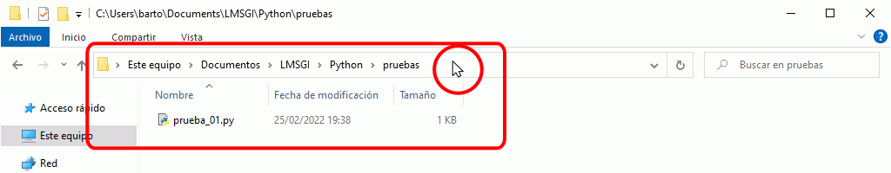

Ejecutar programas de Python
Ejecutar programas en ventana de terminal
Puede ejecutar en una ventana de terminal o de PowerShell programas creados anteriormentes, de varias maneras equivalentes:
- Abra una ventana de terminal desde el menú de inicio, (Inicio > cmd ), cambie a la carpeta donde esté el programa y escriba el nombre del programa (con la extensión).


- Abra una ventana de terminal desde el menú de inicio, (Inicio > cmd ) y escriba la ruta y el nombre del programa (con la extensión).

- Abra una ventana de PowerShell desde el Explorador de Windows y escriba py y el nombre del programa (con la extensión). Para ello vaya hasta la carpeta que contiene el programa, haga Shift + clic derecho y elija la opción "Abrir la ventana de PowerShell aquí" (en Windows 10) o "Abrir ventana de comandos aquí" (en Windows 7).


Por otro lado, como el instalador de Python registra la extensión .py, se puede ejecutar un programa de Python en Windows haciendo doble clic sobre él en el explorador de Windows. El problema es que los programas se ejecutan en una ventana de MS-DOS que se abre al iniciarse el programa y que se cierra cuando el programa termina. Para evitar que los programas terminen, se puede añadir una última línea con la función input() que, como se explica en la lección sobre la entrada por teclado, se queda esperando a que pulsemos la tecla Intro. Al pulsar Intro, la ventana se cerrará.
El inconveniente de esta solución es que cuando se ejecuta el programa en IDLE, el programa también se queda esperando que pulsemos Intro y es fácil olvidar hacerlo. Si no pulsamos Intro, al ejecutar un segundo programa, IDLE sigue esperando que pulsemos Intro para el primer programa y da la impresión de no funcionar correctamente. En general, antes de ejecutar un programa, hay que comprobar que en la ventana principal de IDLE el cursor esté visible junto al prompt >>>.
Ejecutar programas en IDLE
IDLE permite escribir y ejecutar programas de Python. los programas se escriben en ventanas secundarias y el resultado de la ejecución se muestra en la ventana principal de IDLE, como se comenta en la lección IDLE, entorno de desarrollo.
Ejecutar programas en entorno interactivo
Es posible ejecutar programas desde un entorno interactivo, recurriendo a la función exec(), como muestra el siguiente ejemplo.
Python 3.7.2 (tags/v3.7.2:93affc0492, Dec 23 2018, 23:09:28) [NSC v.1916 64 bit (AMD64)] on win32
Type "help", "copyright", "credits" or "license" for more information.
>>> exec(open("ejemplo.py").read())
Otros
Diferencia entre .py y .pyw
Los programas Python pueden tener dos extensiones: .py y .pyw. La más utilizada es la primera, .py.
Si se ejecutan desde IDLE, no hay diferencia entre ambas extensiones.
Pero si se ejecutan desde un terminal o haciendo doble clic sobre los ficheros, entonces sí que hay diferencias. Los archivos .py son ejecutados por python.exe, mientras que los archivos .pyw son ejecutados por pythonw.exe. La principal diferencia es que python.exe crea una ventana de terminal (o aprovecha la ventana de terminal desde la que se ejecuta el programa), ventana que permite pedir valores al usuario o imprimir mensajes, mientras que pythonw.exe no crea ninguna ventana de terminal.
Solamente se debe utilizar la extensión .pyw si el programa crea y gestiona su propia ventana de interfaz de usuario o si no queremos ni pedir datos al usuario ni mostrarle ninguna salida del programa. En caso contrario, es mejor utilizar la extensión .py.
Otra diferencia es que python.exe ejecuta los programas de forma síncrona, es decir, que en un terminal no se puede ejecutar un nuevo programa .py hasta que ha terminado el programa anterior, mientras que pythonw.exe ejecuta los programas de forma asíncrona, es decir, que se pueden ir ejecutando nuevos programas aunque los anteriores no hayan terminado de ejecutarse.